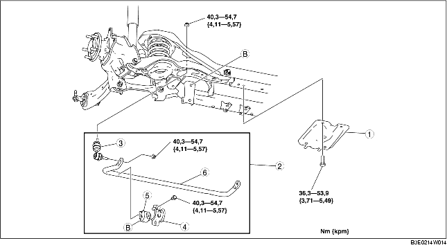

1. Demontera i den ordning som anges i tabellen.
2. Montera i omvänd ordning mot demonteringen.

.
|
1
|
Fäste, bakre tvärstag
|
|
2
|
Bakre krängningshämmare
|
|
3
|
Krängningshämmarens länkarm
|
|
4
|
Krängningshämmarens fäste
|
|
5
|
Krängningshämmarens bussning
|
|
6
|
Krängningshämmare bak
|
1. Säkra flänsen på krängningshämmarens fäste med ett skruvstäd.
2. Demontera krängningshämmarens fäste.
1. Placera krängningshämmarens bussning så att klacken är riktad mot fordonets vänstra sida.
2. Vidga öppningen på krängningshämmarens bussning 16-26 mm {0,7-1,0 in} och montera bussningen på den bakre krängningshämmaren enligt bilden.
1. Stryk på fett på krängningshämmarens bussning.
2. Montera krängningshämmarens fäste med ett skruvstäd.
1. Dra åt bultarna i den ordning bilden visar.